Python 是什么？
Python 是一种编程语言。Python 项目通常由源代码、配置和资源文件组成，需要先安装 Python 运行环境，再由它执行项目代码；它不是默认就能安装到手机里的应用包。
C.A.S.S.I.E. / BEGINNER GUIDE
如果你第一次接触 Python，或者第一次下载一个由代码和素材组成的项目，这份指南会从“它是什么”讲起，带你在 Windows 电脑上准备环境、启动 CASSIE。
适用于 CASSIE v0.3 及以上版本 · Windows 图文步骤Python 是一种编程语言。Python 项目通常由源代码、配置和资源文件组成，需要先安装 Python 运行环境，再由它执行项目代码；它不是默认就能安装到手机里的应用包。
CASSIE 是本地运行的广播生成工具：它读取项目里的音频素材，提供浏览器操作界面，可试听并导出广播音频。网页界面由电脑上的 Python 程序在本机启动。
适合想在电脑上制作、试听或自定义 CASSIE 广播，并愿意按步骤安装 Python、音频工具和依赖的用户。完全没有编程经验也能照教程操作，不要求先学会写代码。
因为这是 Python 电脑项目，不是 Android 应用。APK 是 Android 的安装包格式；本项目提供的是 Python 源代码和运行所需资源，因此下载内容里不会自动出现 APK。
这是项目的正常组成方式：Python 文件负责程序逻辑，JSON 文件保存配置，音频素材和网页样式放在各自目录。它们一起构成可运行的项目，不能只挑一个文件运行，也不要随意移动内部文件。
本教程介绍的运行方式面向 Windows 电脑，需要桌面版 Python、FFmpeg、音频设备和本地浏览器。它没有提供手机应用或 APK，所以不能按普通手机 App 的方式安装使用；手机上的 Python 环境也不属于本教程支持的运行方式。
不是。程序在自己的电脑上启动，浏览器打开 http://localhost:8080/cassie_play 连接本机服务；一般不需要把服务公开到互联网。
先下载并解压 CASSIE v0.3 或更新版本。项目文件夹中应能找到 cassie_play.py、diagnostic.py 等文件。请保留完整目录结构，不要只复制其中一个 Python 文件。
教程原始下载渠道信息如下，请自行确认下载来源可信并遵守相关使用条款：
交流 QQ 群：852101808、1051301855。
本仓库 README 标注 Python 3.6.15 及以上，并说明 Python 3.13 及以上不兼容；为减少新手遇到的依赖兼容问题，建议先使用 Python 3.10 至 3.12。若你使用其他 CASSIE 分支或更新版本，请以对应目录的 README 为准。
从 Python 官方下载页面下载适合你电脑的安装程序。Windows 普通 64 位电脑通常选择 Windows installer (64-bit)。
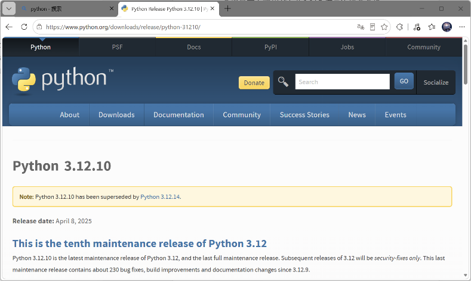
在下载页面向下找到 Files 区域，选择 Windows installer (64-bit)。旧版本页面的排版可能与截图不同。
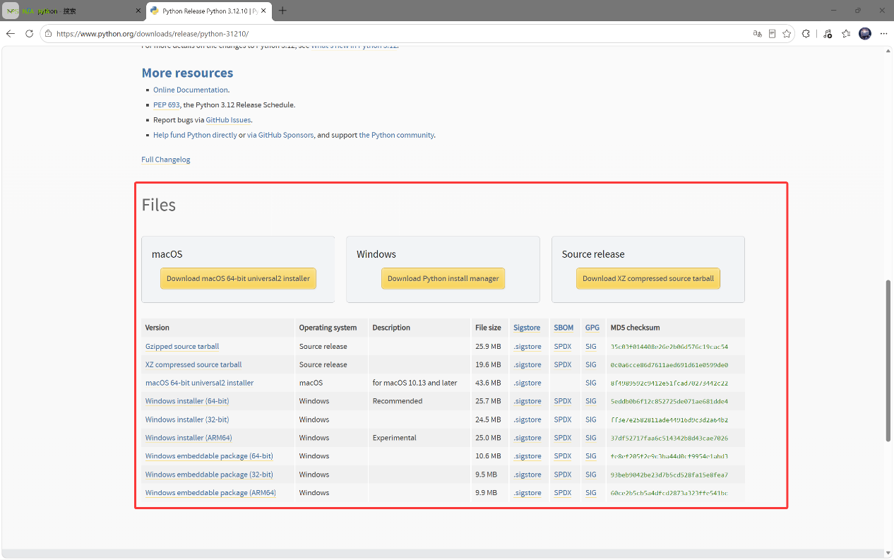
Add Python to PATH（若界面提供该选项），再选择安装。自定义路径时建议使用简单的英文路径。cmd 并回车，打开命令提示符。python --version python -m pip --version
若提示找不到命令，重新打开命令提示符再试；仍不行时检查 PATH 配置，或重新安装并勾选添加到 PATH。
FFmpeg 是单独的音频处理程序，不是 Python 库，不能通过 pip 安装。CASSIE 的音频处理会用到它。
D:\ffmpeg。bin 文件夹，复制地址栏中的完整路径备用。里面应能找到 ffmpeg.exe。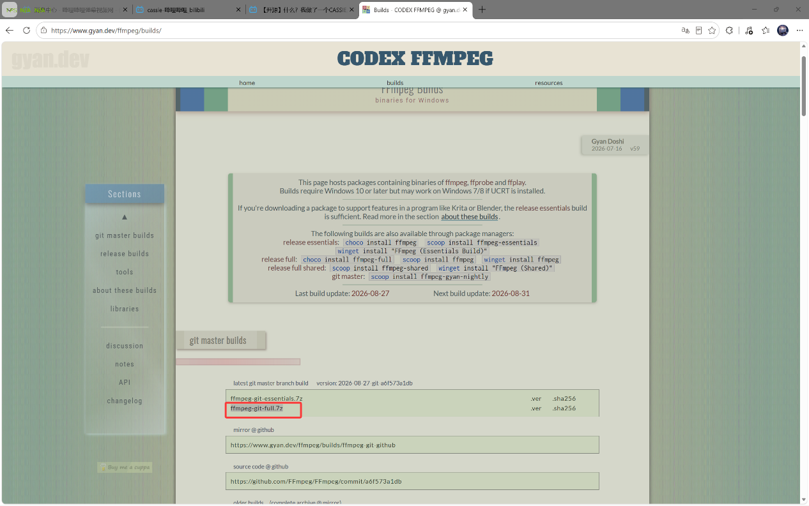
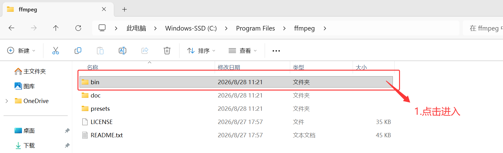
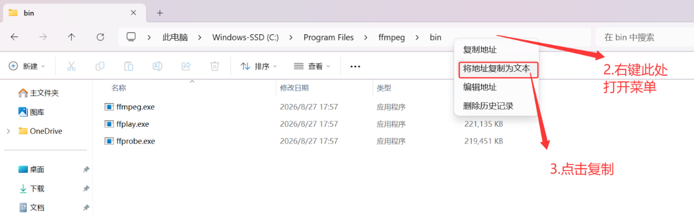
Path，点击“编辑”，再点击“新建”。bin 路径，依次确认保存。若选择编辑系统变量，可能需要管理员权限。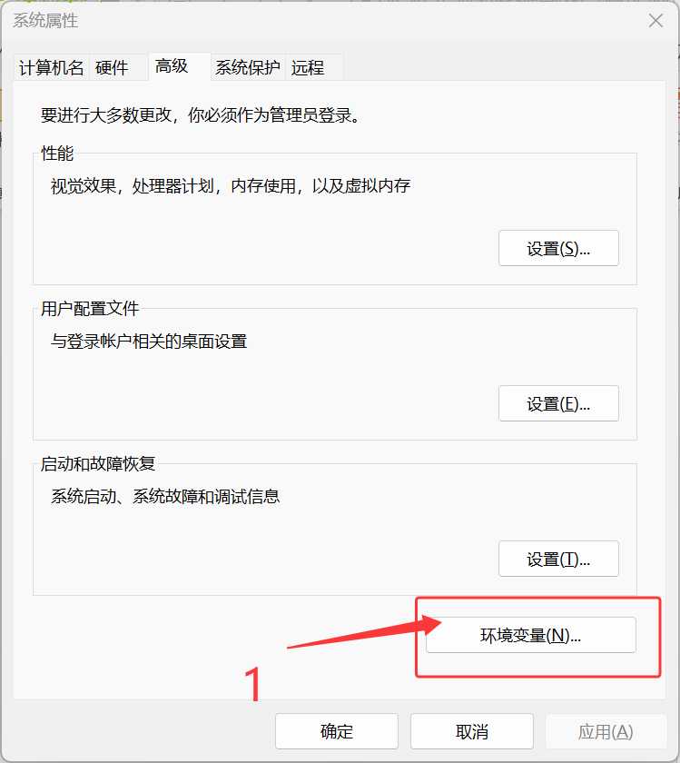
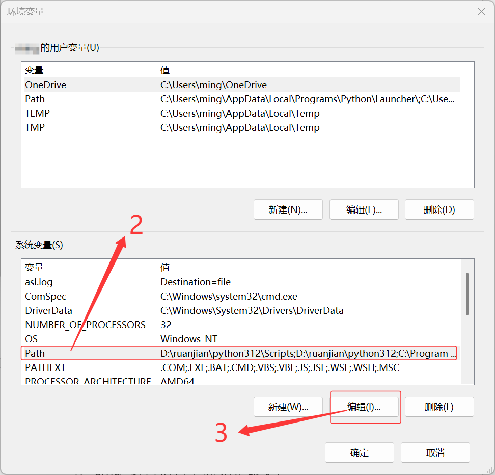
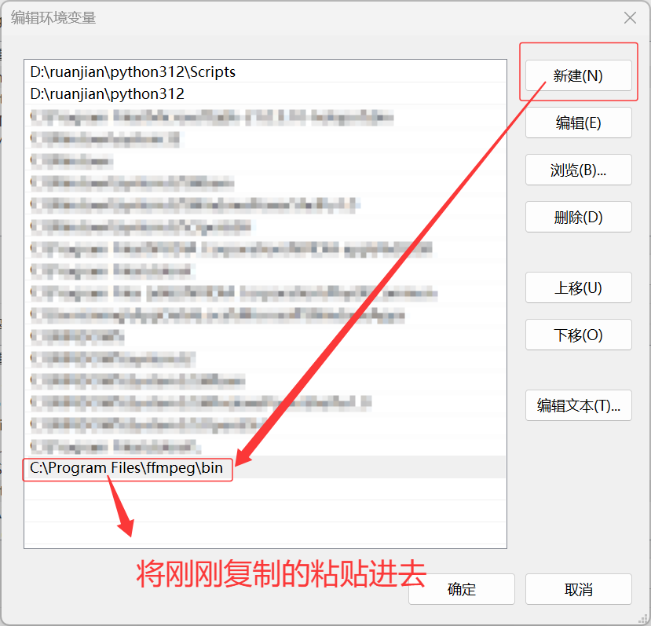
ffmpeg -version
出现版本信息即配置成功。若提示找不到命令，确认添加的是包含 ffmpeg.exe 的 bin 文件夹，并确保新开的终端已读取最新环境变量。
先进入 CASSIE 项目根目录，在地址栏输入 cmd 并回车，可直接在该目录打开命令提示符。确认当前目录能看到 cassie_play.py。
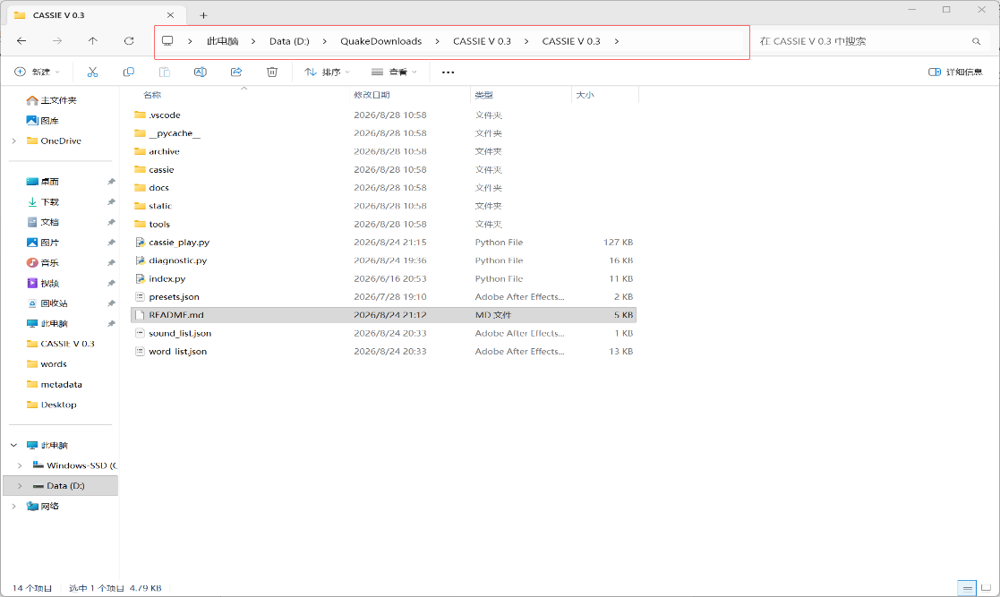
在命令提示符中安装项目依赖。这里的命令已分开写清库名；网络环境较慢时可稍等安装完成。
python -m pip install bottle cheroot pygame pydub numpy colorednoise
本仓库的诊断程序还使用 rich，如运行诊断时提示缺少它，可安装：
python -m pip install rich
如果项目附带 diagnostic.py，也可以按对应 README 的说明运行诊断程序，让它检查环境与缺失依赖。FFmpeg 仍需按上一节单独安装。
cassie_play.py）。python diagnostic.py
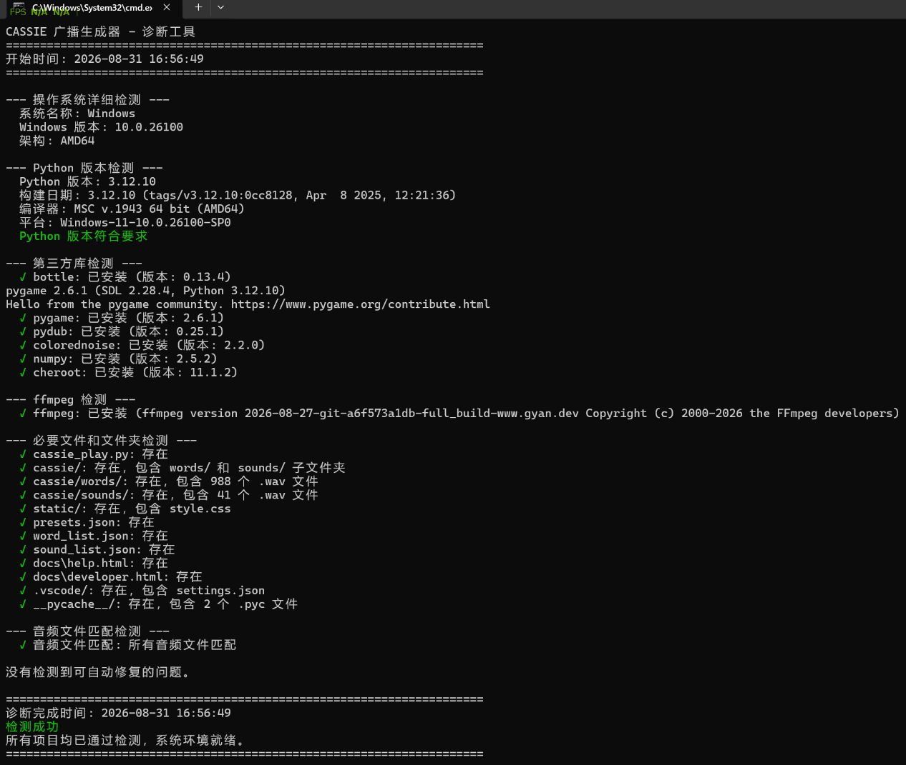
诊断通过后，在命令提示符运行：
python cassie_play.py
保持这个命令提示符窗口开启，然后在电脑浏览器访问 http://localhost:8080/cassie_play。
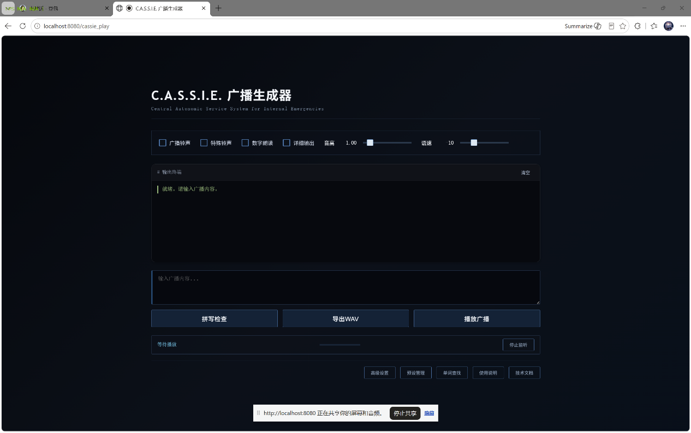
localhost 是当前电脑本机地址，不是可分享给他人的公网链接。本工具代码与音频素材的许可情况并不相同。原教程说明，C.A.S.S.I.E. 语音音频素材来源于游戏《SCP：秘密实验室》，相关音频版权归 Northwood Studios 所有，素材未获官方授权。请勿单独提取、复制或传播原版音频；使用者应自行确认并遵守游戏及素材的适用条款。本教程仅说明程序安装与运行步骤。
截图从随附的原始教程文档中提取，仅用于对应步骤说明。
返回页面顶部 ↑